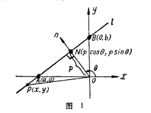

过原点向直线做一条的垂线段，该垂线段所在直线的倾斜角为α，p是该线段的长度。 x·cos α+ysin α-p=0。 规定：与X轴平行或重合的直线的倾斜角为0°
- 中文名
- 法线式
- 外文名
- Normal form
- 适用范围
- 数理科学
- 应用邻域
- 解析几何
- 方程式
- xcosα+ysinα-p=0
过原点向直线做一条的垂线段，该垂线段所在直线的倾斜角为α，p是该线段的长度。则该直线方程的法线式为：xcosα+ysinα-p=0。其中p为原点到直线的距离，θ为法线与X轴正方向的夹角。
法线式斜截式推导
设坐标平面内的任意一条直线l在y 轴上的截距为b，法线n交直线l于点N，
，x轴的正方向到法线n的正方向的角为θ，则直线l和y轴的交点B的坐标与点N的坐标分别为（0，b）与（psinθ，pcosθ）（图一）

图一
由
得
故
解得
又由法线n的斜率
知
直线l的斜率
将这里的K和b的值代入直线方程的斜截式得
若
，方程两端都乘以
后，将各项都移至等号左边得
若
，仍有
法线式两点式推导
因直线l经过点N（pcosθ，psinθ）及点B
（图一），故
因此
两边都乘以
后，展开得

所以
法线式截矩式推导
设直线l在x轴上的截距为a（图一），用与求
类似的方法可求得
将这里的a和b的值代入直线方程的截距式得
整理得
法线式勾股定理推导
设P（x，y）为直线上的任意一点（ 下文中的p皆与此意义同），则图一中：
两边平方并整理得
- 参考资料
-
- 1. 介绍直线方程的法线式的几种推导方法 ．中国知网[引用日期2017-10-08]
-
学术论文
内容来自

-
- 法线式凹凸映射在分块纹理映射中的应用． 《 CNKI 》 ， 2014
- 法线式直线方程在圆曲线测设中的应用． 《 CNKI;WanFang 》 ， 2012
- 直线法线式方程在建筑施工放样中的应用． 《 CNKI;WanFang 》 ， 2012
- 斜航式法向圆弧螺旋锥齿轮传动原理研究． 《 CNKI 》 ， 2002
- 基于三点微平面式法向检测方法． 年
-
查看全部

科普中国
致力于权威的科学传播
本词条认证专家为
V百科往期回顾


- 权威合作编辑
-
“科普中国”是为我国科普信息化建设塑造的全...
- 什么是权威编辑
- 词条统计
-
- 浏览次数：23574次
- 编辑次数：5次历史版本
- 最近更新： lovely的2011年（2017-10-10）
- 突出贡献榜

为您推荐广告